Eclipse of Fear
A first-person survival horror prototype set on a college campus after midnight. Built in Unreal Engine 5 around psychological pressure, a diegetic "Lives as Papers" health system, a Blackboard-driven Boss Behavior Tree, and 4 milestone-triggered enemy waves.
★ Key Design & Technical Highlights
- Designed the diegetic "Lives as Papers" system where depleting your radial health ring swaps the active paper texture from parchment (
Life) to charred ash (Life_burning), physically burning away 1 of your 3 quest forms. - Built 4 milestone-driven Minion spawners (
1Tutorialthrough4AfterDirectorKey) that escalate walk speed by +33% (300 cm/sto400 cm/s) and tighten hearing thresholds from2158.55to1400.0while keeping AI sensing locked at0.05s. - Engineered The Eclipse Boss AI using a Blackboard-gated Behavior Tree (
BT_Boss_BT) with self-aborting decorators so line-of-sight detection immediately interrupts patrol loops. - Architected decoupled level progression and persistence using
BP_TriggerBoxWithConditionsEvent Dispatchers and aBPI_SaveBlueprint Interface serializing 18 world, door, and inventory states.
Game Design & Horror Pacing
01. Overview & Design Pillars
What creates more anxiety for a college student: ghosts or paperwork? Eclipse of Fear drops you onto a quiet campus after midnight with an ordinary student errand: collect and submit mandatory leave forms before morning. Every form you deliver escalates the threat, turning familiar hostels and faculty corridors into a tense survival run.
1. Grounded Campus Layout
Hostels, hallways, and faculty rooms follow realistic building logic so players navigate by spatial memory, landmarks, and sightlines instead of mini-maps.
2. Lives as Papers
Standard heart icons are replaced with the 3 physical leave forms you carry. Getting caught burns a page to ash, tying survival directly to your objective.
3. Inner Thoughts Cues
Short lines of inner monologue appear in world space when entering key rooms, pointing players toward tools like the flashlight without popup tutorials.
4. Danger Tied to Progress
Completing each objective triggers the next enemy spawner tier and shuts off warm safe-room lights, making progress feel tense rather than safe.
02. Gameplay Loops & Three-Act Emotional Pacing
Rather than relying on random jump scares, we structured player tension across nested gameplay loops and a deliberate three-act emotional curve (Curiosity → Anxiety → Panic):
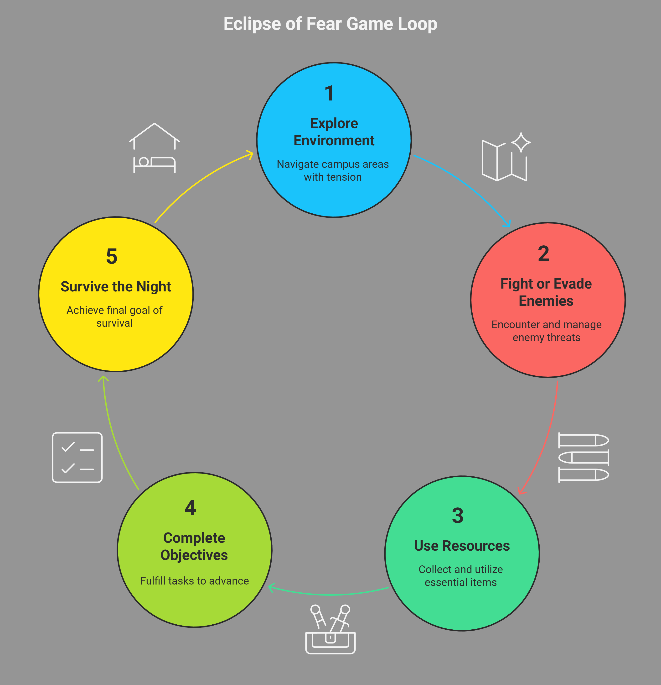

The Hostel & Tutorial Setup
Safe starting zone that teaches movement, desk interaction, and flashlight use while establishing the missing leave forms and early tutorial patrols.
The Academic Block
Corridors open up into multi-door wings. Submitting the CM Application triggers stronger Minion spawns, shifting gameplay from exploration to resource management.
HOD & Director Key Escape
Acquiring the HOD and Director keys unleashes peak-speed Minions alongside The Eclipse boss chase, turning the return sprint into a high-pressure escape.
03. Core Systems & Diegetic UI
Every HUD element was designed to stay minimal and grounded in the student's situation so nothing pulls the player out of the dark campus environment:
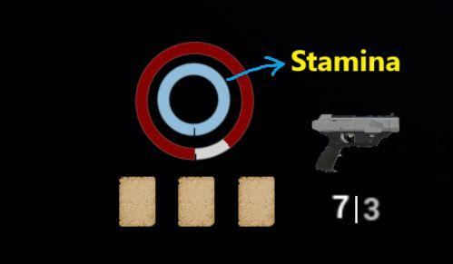
7 | 3).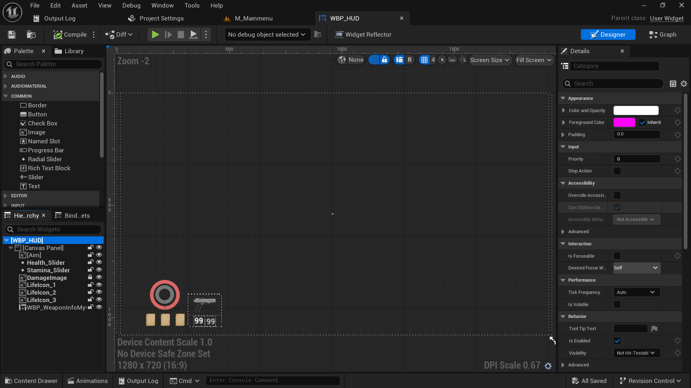
WBP_HUD): Radial Health_Slider and Stamina_Slider paired with LifeIcon_1 through LifeIcon_3 and a full-screen DamageImage flash.


Scope Management: Cutting "Fear Lockdown" to Ship on Time
I originally wrote a full feature spec for Fear Lockdown (available in the document pills above), where submitting each form would permanently seal building wings, blare campus alarms, and trap players inside timed lockdown zones. Halfway through our 1-month schedule, I cut the dynamic door lockdowns so we could focus on polishing the 4 enemy spawner tiers, Boss Behavior Tree, and save persistence. Cutting an ambitious secondary feature early let us ship a complete, stable prototype instead of a half-working build.
04. Enemy Roster & 4-Wave Escalation
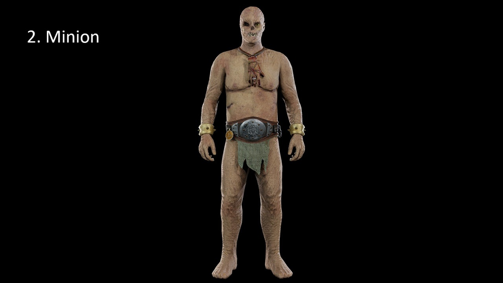
Campus Minions
Roam exterior walkways and academic corridors in packs. Can be staggered or defeated with scarce pistol rounds, forcing players to choose between spending bullets or breaking line of sight.
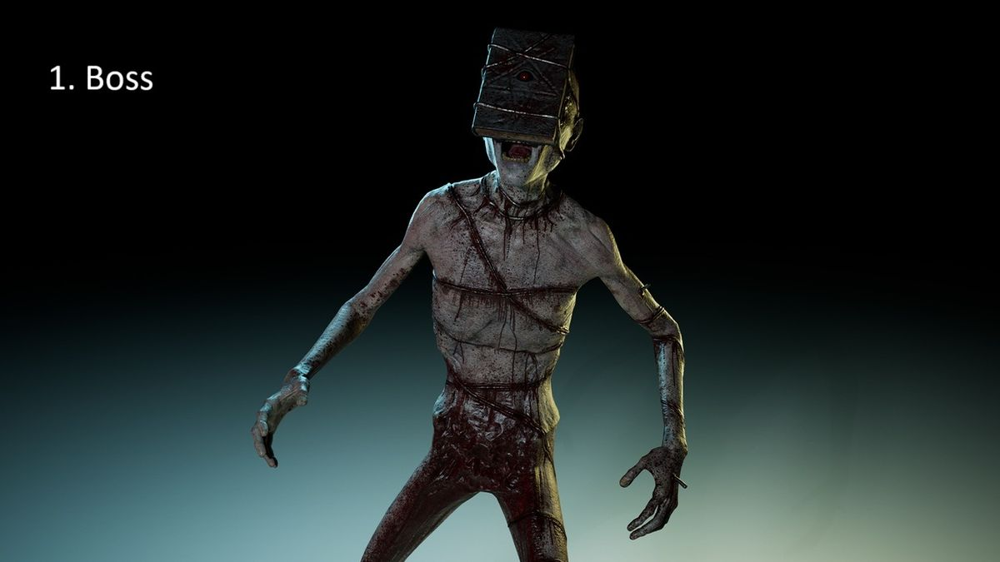
The Eclipse
Enters during the late-game key hunt. Driven by a self-aborting Behavior Tree that immediately switches from roaming to relentless pursuit the moment its sight cone catches the player.
4-Wave Speed & Hearing Escalation
Rather than inflating enemy hit points into bullet sponges, the 4 spawner classes scale movement speed and acoustic sensitivity at each story milestone while locking PawnSensing intervals at 0.05s so detection stays snappy and predictable.
| Wave & Spawner Class | Story Trigger | Max Walk Speed | Hearing Threshold | Design Intent |
|---|---|---|---|---|
Wave 1 (Tutorial)1TutorialMinionSpawner |
Flashlight & Pistol pickup | 300.0 cm/s |
2158.55 |
Teaches sightlines, aiming, and sprint spacing safely |
Wave 2 (Escalation)2AfterCMAppMinionSpawner |
CM Application submitted | 335.0 cm/s |
1900.0 |
Pressures players navigating multi-door academic wings |
Wave 3 (High Alert)3AfterHODKeyMinionSpawner |
HOD Office Key acquired | 400.0 cm/s (+33%) |
1400.0 (Tighter) |
Detects quieter footsteps from further away; punishes reckless sprinting |
Wave 4 (Climax)4AfterDirectorKeyMinionSpawner |
Director Key + Boss active | 400.0 cm/s + Boss |
1400.0 + LOS Chase |
Full-campus pursuit combining fast Minions and The Eclipse |

90° vision cone.

05. Level Design, Spatial Flow & Lighting Cues
With no mini-map or floating objective markers, the campus relies on color-coded landmarks, doorway framing, and warm-to-cold lighting shifts to keep players oriented:
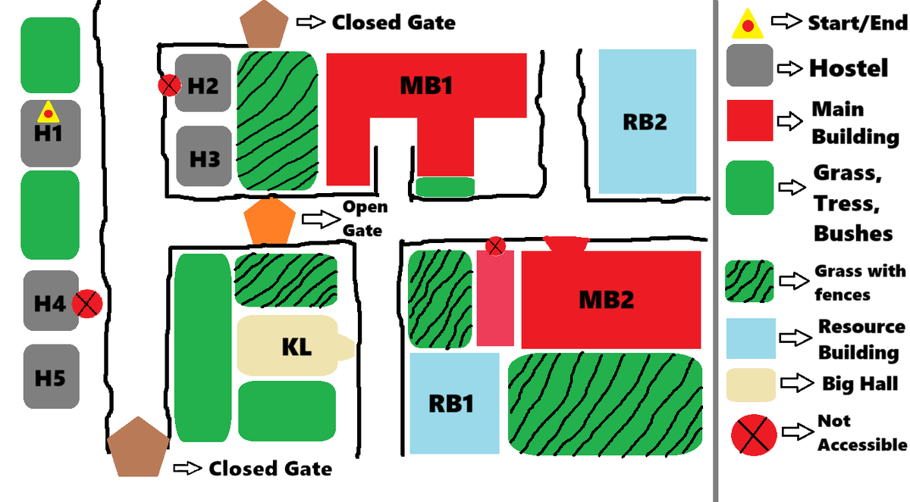
MB1, MB2, RB1, RB2).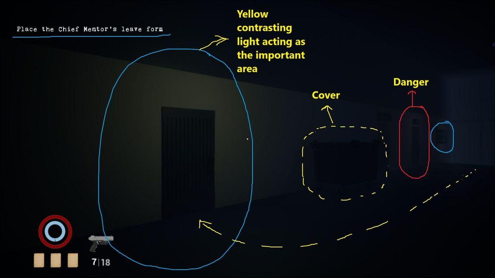
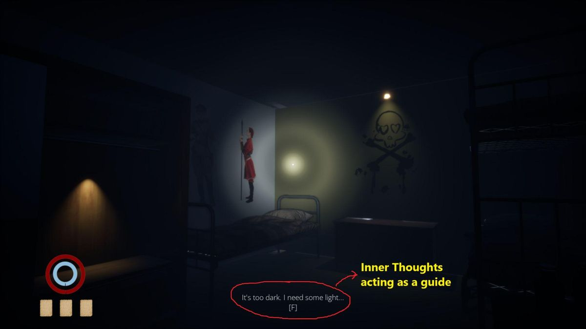
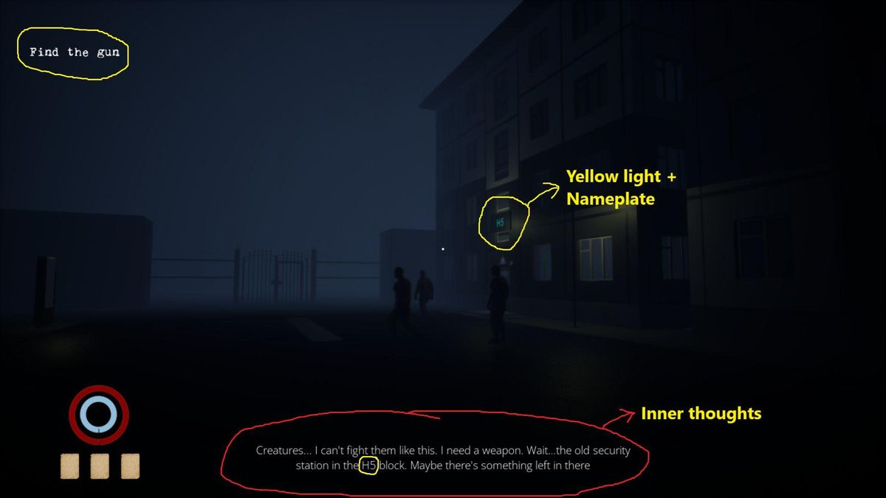
06. Paper to Engine & Post-Mortem
Before building in Unreal Engine 5, we mapped out the complete beat-by-beat progression flow, room connections, enemy spawn waves, save checkpoints, and ammo budgets on paper, then translated them into a spatial blockout and final lighting pass:

H1–H5), Open/Closed gates, wing zoning (MB1, MB2, RB1, RB2), and Boss/Minion spawn nodes.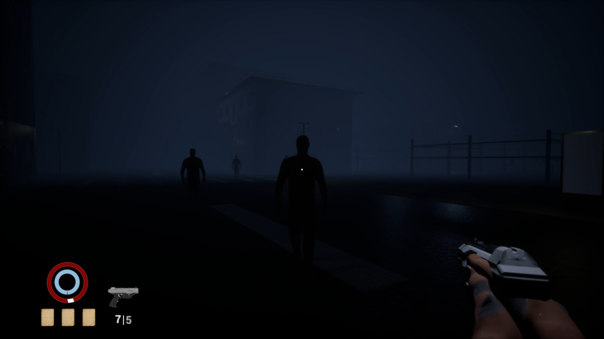
Design Notebook: Progression, Wayfinding, Economy & Save Architecture

H5 gun pickup, tension zones, and escalating Minion/Boss encounters (MB1 to MB2), tagged with Widget (W) and Level Design Principle (LDP) triggers.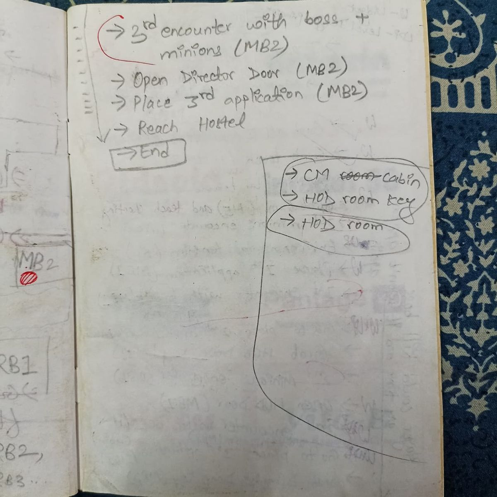
MB2, unlocking the Director Door, submitting the 3rd leave form, and escaping back to the Hostel, alongside the CM Cabin → HOD Key → HOD Room loop.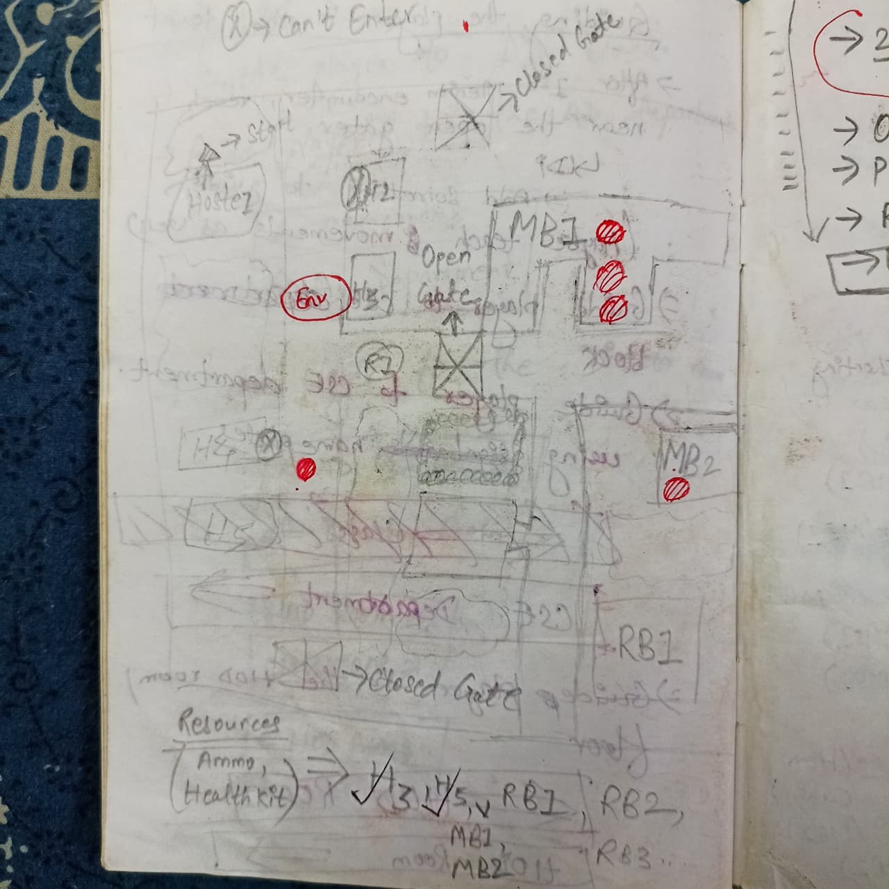
Open/Closed perimeter gates, environmental tension triggers (Env), enemy patrol zones (red markers), and room-by-room Ammo/Health Kit placements (H3, H5, RB1, RB2, MB1, MB2).
LDP) notes and directional nameplate layouts guiding players to the AD Department, CSE Block, HOD Room floor, and Director Room without HUD waypoints.
Minion and Boss spawn counts alongside Ammo (A) and Extra Health (E) budgets across all 5 story milestones, scaling up to 10 enemies and 40 ammo after the Director Key.
5 in the starting pistol up to 50 in MB2, paired with playtest bug catches: fixing respawn ammo exploits, kiosk Hold E UI prompts, and the final Hostel escape trigger.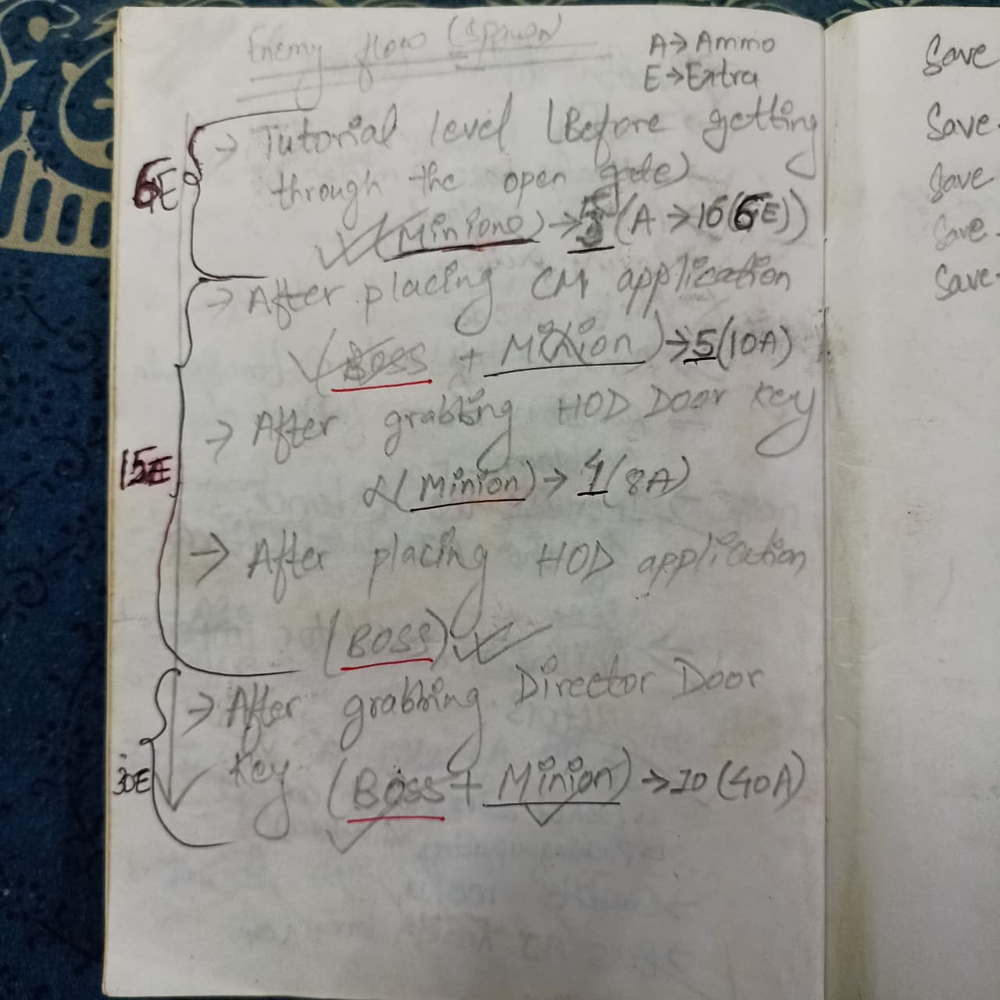
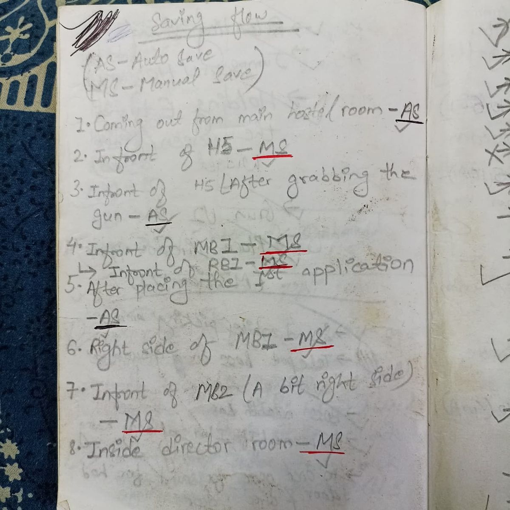
AS) after key pickups and form deliveries from manual kiosk save stations (MS) placed outside H5, MB1, RB1, MB2, and the Director's Room.What Went Right
- Campus lighting contrast and volumetric fog build dread before an enemy even enters sight.
- "Lives as Papers" turned health loss into a tangible loss of quest progress rather than an abstract health bar.
- Modular spawners and Event Dispatchers made adding new wave triggers fast and bug-free.
What Went Wrong
- Multiple Minions occasionally bunched up in narrow academic doorways during Wave 3 chases.
- Spent too much early sprint time placing interior furniture before locking enemy walk speeds.
What I Learned
- Validate corridor widths against AI capsule sizes during graybox blockout before dressing rooms.
- A +33% increase in enemy walk speed and tighter hearing thresholds creates far more panic than extra HP.
- Cutting secondary features like Fear Lockdown early protects the core gameplay loop.
Uncut Gameplay Walkthrough
Technical Design & Interactive Blueprints
07. Technical Design: AI, Triggers & Save Architecture
Rather than polling game state inside heavy Event Tick loops, Eclipse of Fear runs on event-driven communication. Conditional trigger volumes, objective points, milestone spawners, Blackboard AI, diegetic UMG widgets, and a decoupled BPI_Save interface fire only when player state changes:
Boss Behavior Tree, Wave Stat Tuning & Save Architecture
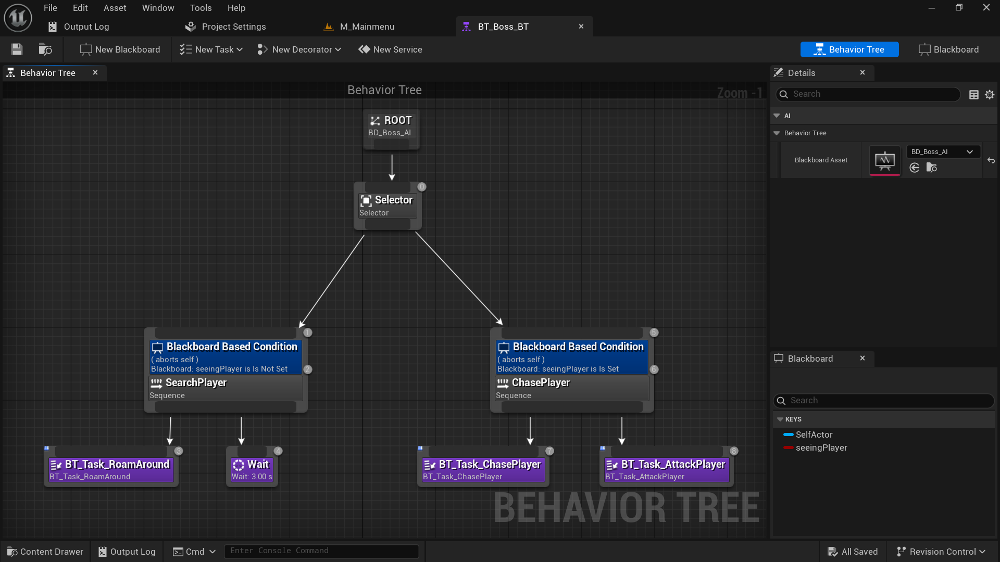
BT_Boss_BT): Blackboard Based Condition (aborts self) decorators watch seeingPlayer so spotting the player immediately interrupts SearchPlayer (BT_Task_RoamAround + Wait 3.00s) for ChasePlayer.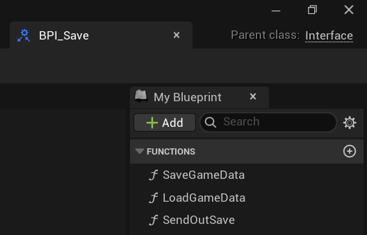
BPI_Save): Decouples checkpoint persistence (SaveGameData, LoadGameData, SendOutSave) from level actors across paper-life respawns.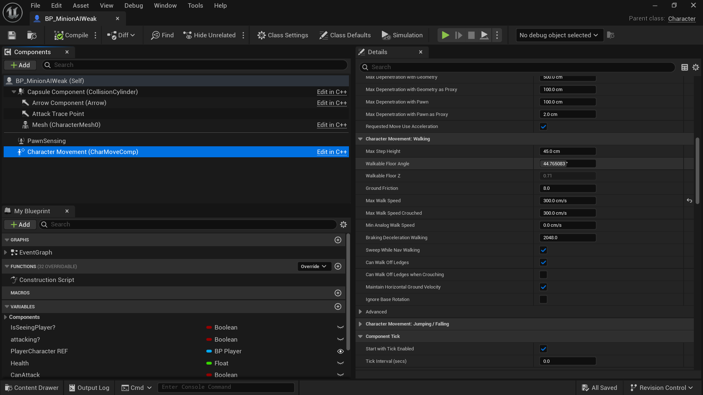
BP_MinionAIWeak): Max Walk Speed set to 300.0 cm/s and Hearing Threshold at 2158.55 for fair early-game pacing.BP_MinionAIAfterHODKey): Max Walk Speed raised to 400.0 cm/s (+33%) with Hearing Threshold tightened to 1400.0.Interactive Unreal Engine 5 Blueprints
Expand any module below to inspect the live UE5 node graph, or open it fullscreen on BlueprintUE:
Interactive Graph: BP_Boss_AI (Perception & Blackboard Sight Updates)
Interactive Graph: 3AfterHODKeyMinionSpawner (Milestone Wave Spawner)
Listens for the HOD Key objective event before enabling Wave 3 spawn points across the academic block.
Spawns BP_MinionAIAfterHODKey actors configured with 400 cm/s chase speed and tighter hearing.
Tracks active spawned instances and cleans up earlier weak-tier patrols to keep frame times steady.
Interactive Graph: BP_TriggerBoxWithConditions (Conditional Overlap & Dispatcher)
OnComponentBeginOverlap (Box) filters out AI pawns by casting strictly to BP_Player.
Checks TriggerBoxActive? and prerequisite booleans before passing execution into a DoOnce node.
Broadcasts EVD_TriggerBoxHitWithCondition so doors, lights, and spawners react without hard references.
Interactive Graph: BP_ObjectivePoint (Objective State Machine & UI Transition)
Event BeginPlay instantiates WBP_ObjectivePoint and binds the per-instance ObjectiveName text.
Verifies ObjectivePointActive? and NOT ObjectiveInProgress? before locking via DoOnce.
Plays the objective transition animation, marks ObjectiveCompleted? = true, and advances to the next goal.
Interactive Graph: BP_GuidingWithTutorial ("Inner Thoughts" Diegetic Guidance)
Fires only when GuidingWithTutorialActive? is true and no conflicting objective prompt is on screen.
Displays the room's inner thought text for 5.0s without pausing gameplay or breaking immersion.
Clears GuidingWithTutorialActive? after firing once so repeated backtracking never spams old hints.
Interactive Graph: WBP_HUD (Diegetic "Lives as Papers" Burn Logic)
Updates radial Health_Slider, Stamina_Slider, and red DamageImage vignette on enemy hits.
When a life is lost, swaps the active slot (LifeIcon_1 to 3) from Life to Life_burning.
Triggers checkpoint reload if forms remain, or transitions to WBP_Death when all 3 pages burn out.
Interactive Graph: BP_Player (Sprint Stamina, Flashlight & Pistol Loop)
Manages sprint speed boosts, stamina drain timers, and recovery cooldowns so players cannot sprint endlessly.
Handles flashlight toggle, pistol firing traces, reload checks, and magazine/reserve ammo tracking.
Processes incoming enemy attacks, desk pickups, and save-state restoration upon checkpoint respawn.
Interactive Graph: BP_MyGameInstance (Persistent Save & Checkpoint Manager)
Event Init checks Does Save Game Exist for GameSlotName and loads or initializes BP_SaveGame.
Implements Event SaveGameData from BPI_Save to write current wave and inventory states to slot.
Tracks CurrentDeathCount across level reloads so burned paper lives stay spent until a full run reset.
PawnSensingfiresOnSeePawnwhenBP_Playerenters the forward vision cone.Writes
seeingPlayer = trueintoBD_Boss_AI, triggering the Behavior Tree self-abort decorator.Retriggerable delay clears
seeingPlayerafter losing line of sight, returning the Boss to roaming.